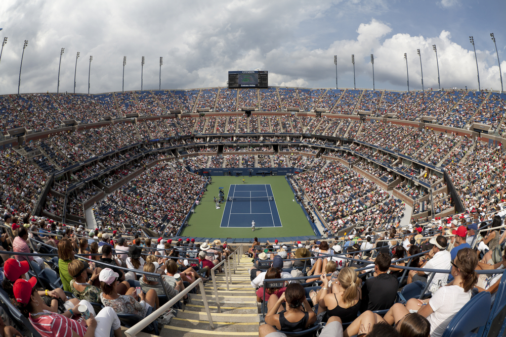
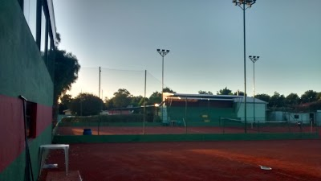
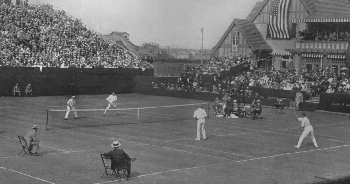
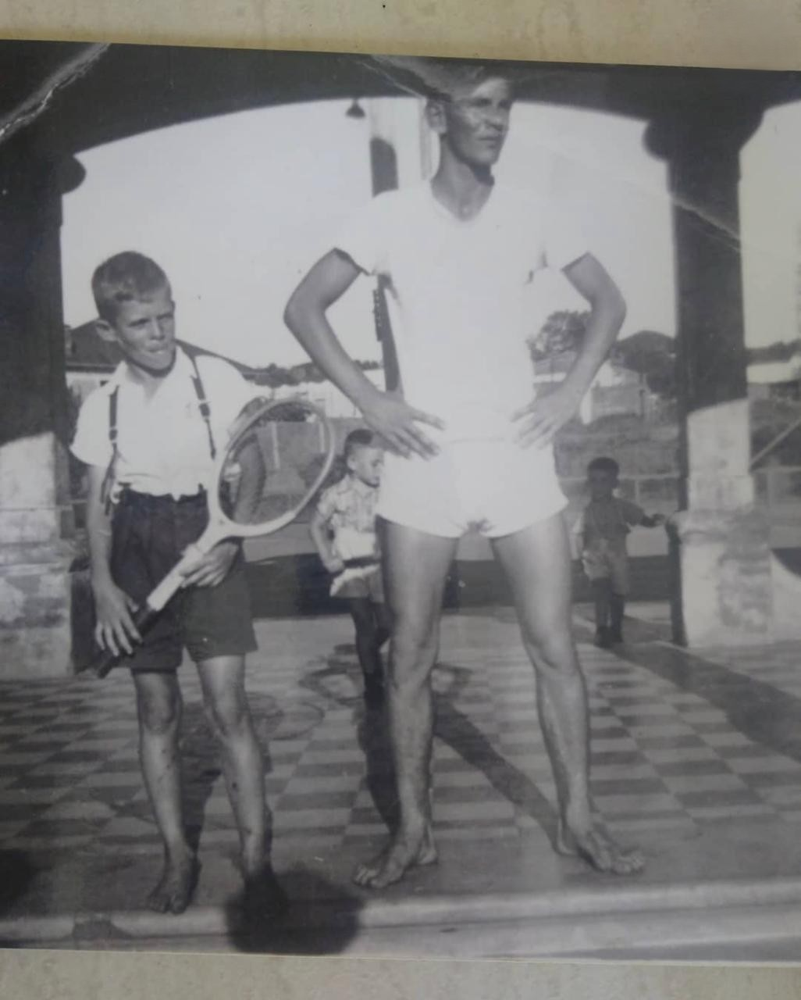
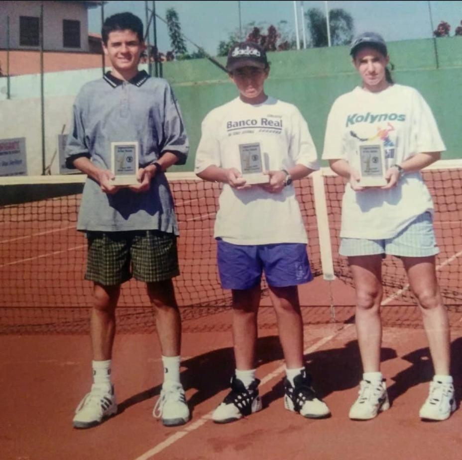
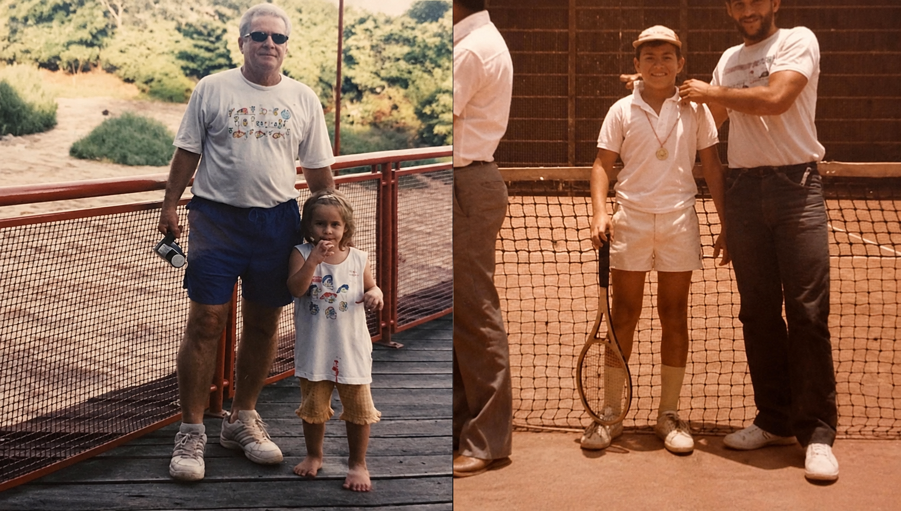
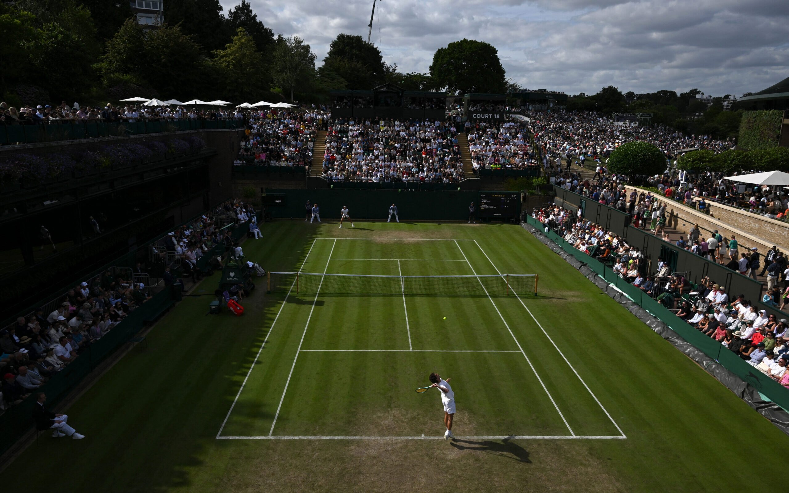
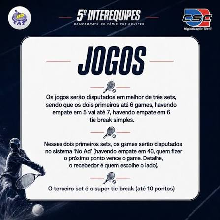
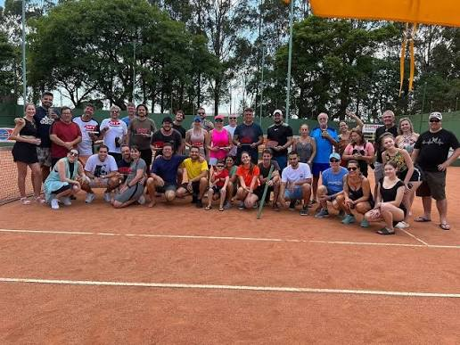
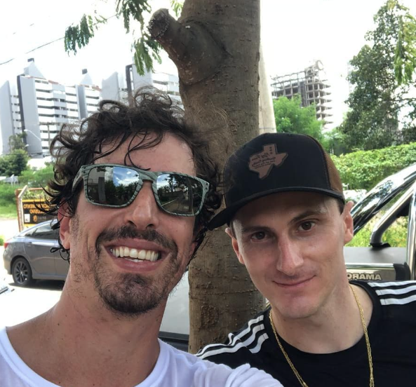

Tottispin
Academia de Tênis
O tênis é mais do que um esporte: é tradição, estratégia, saúde e paixão. Aqui, cada saque é o começo de uma nova história.
O Tênis: um esporte de tradição, estratégia e paixão
O tênis é muito mais do que uma modalidade esportiva. É um esporte que combina técnica, estratégia, preparo físico, concentração e respeito ao adversário. Em cada ponto disputado, os jogadores são desafiados a tomar decisões rápidas, desenvolver habilidades motoras e fortalecer valores como disciplina, persistência e espírito esportivo.
Praticado por pessoas de todas as idades, o tênis proporciona inúmeros benefícios para a saúde física e mental. Além de melhorar o condicionamento cardiovascular, a coordenação motora, o equilíbrio e os reflexos, também contribui para o desenvolvimento da autoconfiança, do raciocínio e da socialização. É um esporte que pode ser aprendido na infância e praticado durante toda a vida.

de história
A História do Tênis no Mundo
Das quadras de palácios franceses aos estádios lotados do Grand Slam.
Jeu de Paume, na França
As origens do tênis remontam ao século XII, na França, quando um jogo chamado Jeu de Paume ("jogo da palma") era praticado utilizando apenas as mãos para rebater a bola.
O Nascimento do Tênis Moderno
O oficial britânico Walter Clopton Wingfield desenvolveu as regras para um jogo disputado na grama, conhecido como Lawn Tennis.
O Primeiro Wimbledon
Foi realizado o primeiro torneio de Wimbledon, na Inglaterra — até hoje o campeonato de tênis mais tradicional e prestigiado do mundo.
Grand Slam e Jogos Olímpicos
Os quatro torneios do Grand Slam — Australian Open, Roland Garros, Wimbledon e US Open — representam o mais alto nível da competição profissional, reunindo os maiores atletas do planeta.
Lendas que marcaram o esporte
A História do Tênis no Brasil
Uma paixão que atravessou o oceano e conquistou o coração dos brasileiros.

A Chegada no Brasil
O tênis chegou ao Brasil trazido por imigrantes e comerciantes ingleses nas regiões Sul e Sudeste. Os primeiros clubes surgiram por volta da década de 1890, inicialmente atendendo à comunidade britânica instalada no país.

Maria Esther Bueno
Uma das maiores tenistas de todos os tempos, conquistou diversos títulos de Grand Slam e levou o nome do país ao cenário internacional.
.jpg)
Guga, o Eterno Campeão
Gustavo Kuerten, o eterno "Guga", venceu três vezes Roland Garros e alcançou o 1º lugar no ranking mundial da ATP, inspirando milhares de brasileiros a praticarem o tênis.
Sobre a Tottispin
Momentos que marcaram a trajetória da nossa academia e entraram para a história.

O Começo
Essa foto foi registrada em 1950, no primeiro clube de tênis de Piracicaba, o então Piracicaba Tênis Clube. Sua localização era onde hoje é a Praça São Domingos Sávio, em frente ao Colégio Dom Bosco Cidade Alta.
Nesta foto está Luiz Totti Filho (segurando a raquete) ao lado do irmão Pedro Totti. Ambos trabalhavam no clube: Luiz como boleiro e Pedro como professor e jogador que representava a cidade.
Esta foto e outros relatos estão no livro Memórias do Bairro Alto, de Luiz Nascimento, com apoio do Instituto Histórico e Geográfico de Piracicaba.

Nossa História
Essa foto é muito marcante para a academia. Em um campeonato Brasileiro, conseguimos que três atletas chegassem às finais. Curiosamente, os três jogaram simultaneamente e em quadras ao lado.
Nos sentimos realizados e orgulhosos, pois alcançar uma final de Brasileiro já é difícil, imagine três finalistas de uma vez. Na foto, Maurício Cabrini, Leonardo Kirche e Fernanda Bini.

Os Fundadores
A Academia de Tênis Tottispin nasceu do sonho e da iniciativa de seus fundadores, que dedicaram suas vidas ao esporte e à formação de novos talentos. Desde o início, a proposta sempre foi muito além do ensino da técnica: criar um ambiente de aprendizado, disciplina, amizade e desenvolvimento pessoal por meio do tênis.
Ao longo de sua trajetória, a Tottispin consolidou-se como um espaço dedicado à formação de atletas e à disseminação dos valores que fazem do tênis um esporte único. Cada treino, cada competição e cada conquista fazem parte de uma história construída com trabalho, perseverança e paixão pelas quadras.
Ranking Tottispin
Uma disputa completa ao longo do ano, dividida em duas temporadas. Participe, evolua e suba no ranking da academia!
Ranking de Simples
Fevereiro - Junho- Principiante
- Intermediário C
- Intermediário B
- Intermediário A
- Avançado
Ranking Interequipes (Duplas)
Agosto - Dezembro- Principiante
- Intermediário C
- Intermediário B
- Intermediário A
- Avançado
Novidade: Ranking de Interequipes
A Tottispin está lançando o Ranking de Interequipes, uma competição emocionante que reunirá equipes em disputas acirradas dentro da nossa academia. O início oficial das disputas é 1 de Agosto de 2026.
- Disputas entre equipes em quadrinhos exclusivos
- Pontuação acumulada ao longo da temporada
- Premiação especial para as melhores equipes
- Participe e represente sua equipe na Tottispin
Ranking em Tempo Real
Veja a pontuação atualizada das equipes durante toda a temporada de Interequipes
Acesse o painel interativo do torneio para acompanhar a evolução das pontuações das equipes em tempo real. Você verá a classificação atualizada, pontos acumulados, estatísticas e todos os detalhes da competição
Abrir Painel Interativo
Mais do que um esporte
Na nossa academia, acreditamos que o tênis transforma vidas. Cada aula representa uma oportunidade de aprender, evoluir, fazer novas amizades e superar desafios.
Seja para quem busca alto rendimento, condicionamento físico, diversão ou simplesmente um novo hobby, o tênis oferece uma experiência completa, capaz de acompanhar o aluno por toda a vida.
Saúde Física
Cardio, coordenação, equilíbrio e reflexos.
Mente
Autoconfiança, raciocínio e concentração.
Socialização
Amizades e espírito esportivo.
Momentos da Tottispin
Clique nas imagens para ampliar e explorar o nosso universo.



Venha conhecer a Tottispin
Descubra por que milhões de pessoas ao redor do mundo escolheram o tênis como seu esporte favorito.